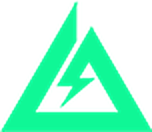
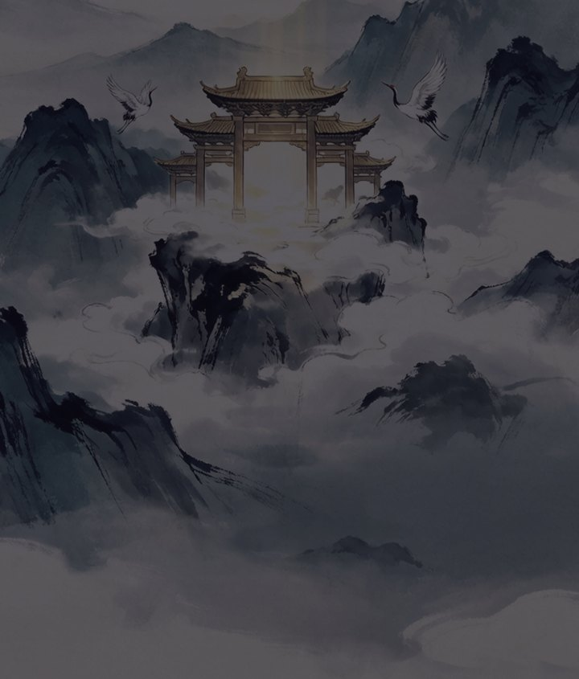

03 — 作品 · 游戏方向
下面这些，
都能点进去看。
拆解案看思路（附完整文字版），游戏看落地（能玩的直接玩）。鼠标移到哪张，那张就浮到最前，其余依次退后。

竞品拆解 · 干员体系 · 附文字版全文
三角洲行动：干员体系拆解案
每个干员存在的理由，都要在体系里说得通。
逐个拆干员技能组、定位差异与成长曲线，分析体系怎么靠「技能—道具—团队角色」三层结构维持对局多样性。站内可读完整文字版。

独立开发 · 挂机修仙 · 数值养成
摆阵修仙
把「阵法搭配」做成核心策略层的挂机修仙。
阵法组合决定产出效率，玩家在有限格子内做取舍。数值曲线、产出循环、美术、界面到发布全流程独立完成——本站的背景立绘就出自这个项目。
可玩 Demo · 事件选择 + 数值管理 · 已上线
应届生求职模拟器
30 天，三种职业路线，存款、体力、心态三条线一起绷着。
每天 3 个行动点，在投简历、准备面试、兼职和休息之间做取舍；面试要真答题，答错就掉 offer 概率。五个数值互相牵制，双难度 + 成就系统，纯 HTML/JS 零依赖。

竞品拆解 · 技能经济 · 附文字版全文
无畏契约：特工体系拆解案
技能不是越强越好，是要在经济系统里标好价。
围绕特工技能组与回合经济的协同关系：技能定价怎么影响决策权重，定位差异怎么塑造阵容博弈。站内可读完整文字版。
可玩 Demo · 三消 + 经营 · 制作中
我的小面馆
三消备菜，定价营业，七天把面馆经营出结局。
每天限 15 步三消决定食材库存，定价决定客流，满意度与声誉互相牵制。面向微信小游戏方向：轻量、竖屏、3 分钟一局。设计文档已就绪，正在实现。